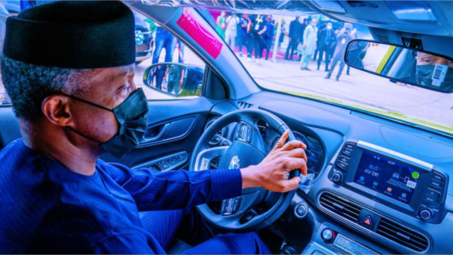
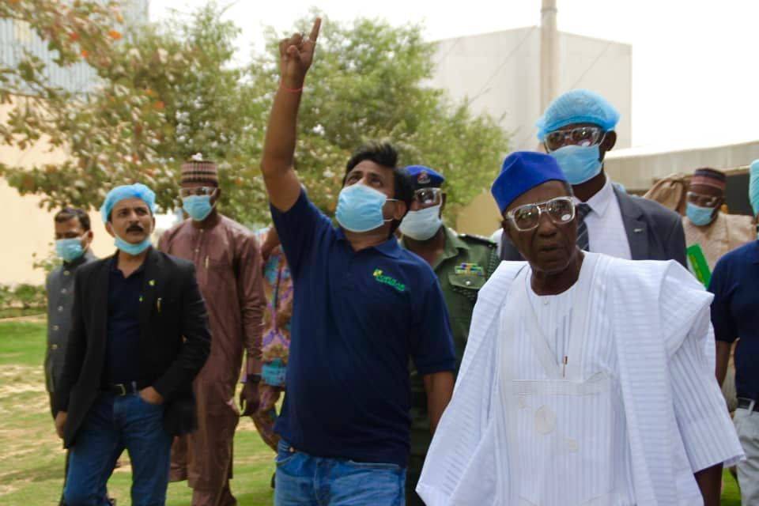
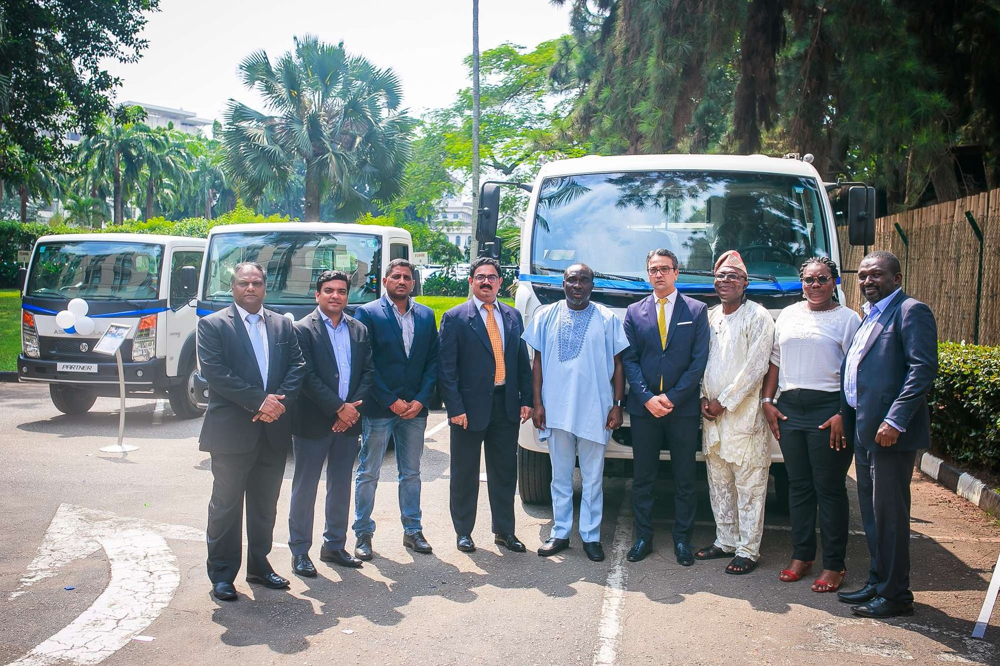
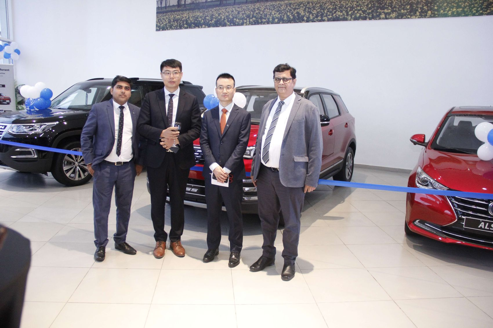
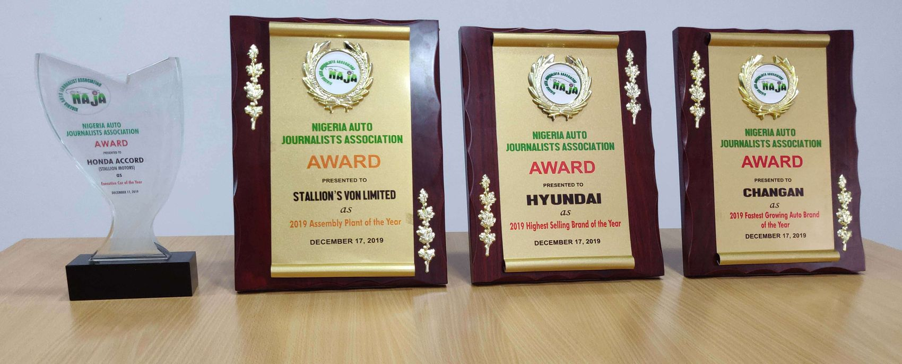
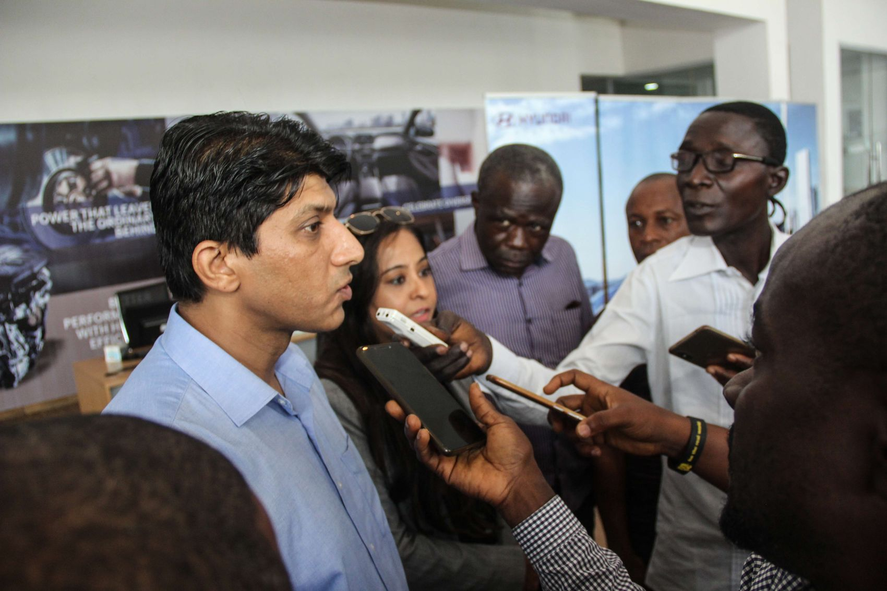
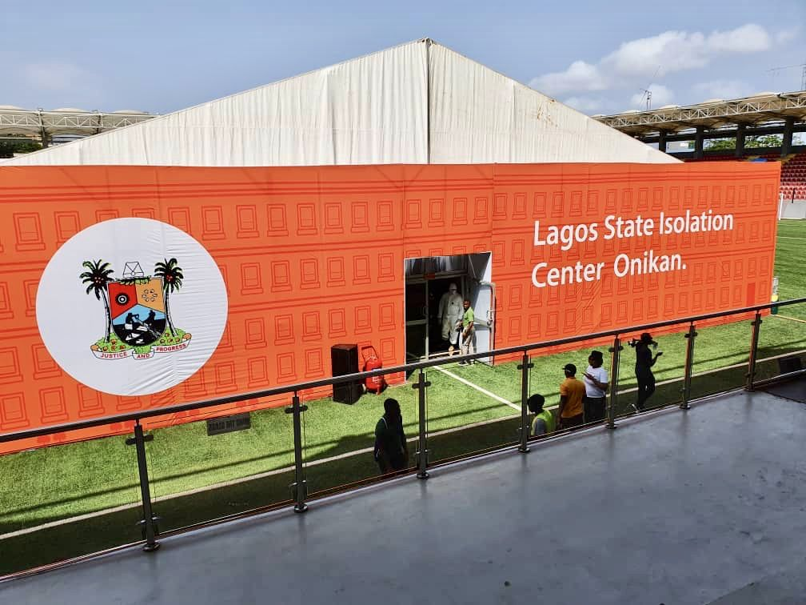
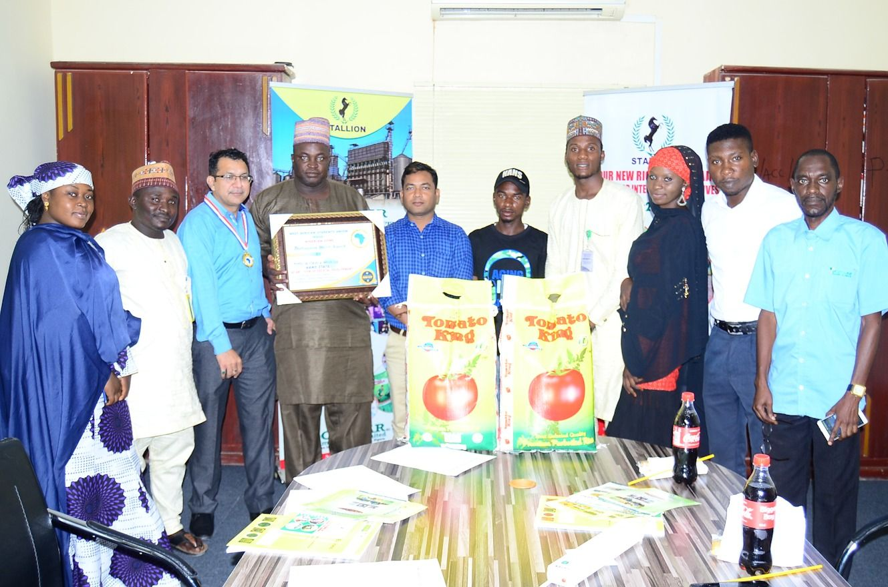
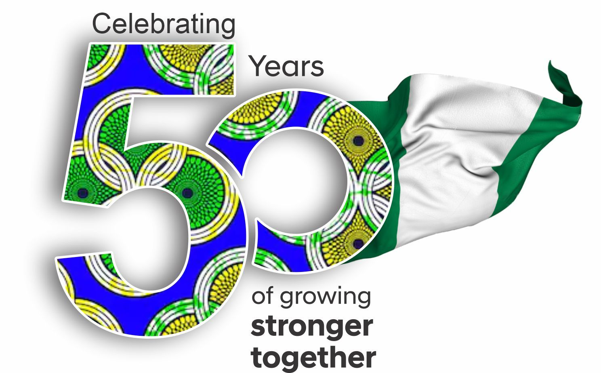

Launches, ceremonies, recognition and community work from across the group.

The Vice President of Nigeria drove the first electric vehicle assembled on Nigerian soil, produced at the group's plant in Lagos — a milestone for domestic manufacturing and for the country's transition to cleaner mobility.

Federal officials visited the group's milling operations as part of Nigeria's drive toward domestic rice sufficiency.

The group introduced a new commercial vehicle range for fleet and public-transport operators across Nigeria.

A new passenger range unveiled at the group's showroom network.

Stallion-VON recognised as best assembler, alongside honours for Hyundai and Changan.

National media briefed on the group's latest model introduction.

The group contributed to the Lagos State isolation facility at Onikan during the public-health response.

The group's annual gathering with farming partners and trade stakeholders in Kano.

The group marked half a century of operations in West Africa.
For interviews, images or company information, contact the corporate communications desk.